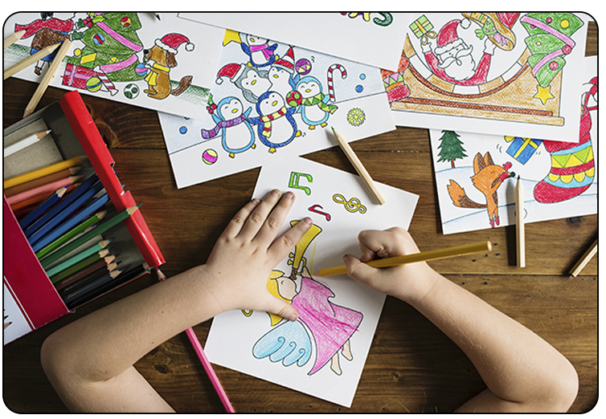
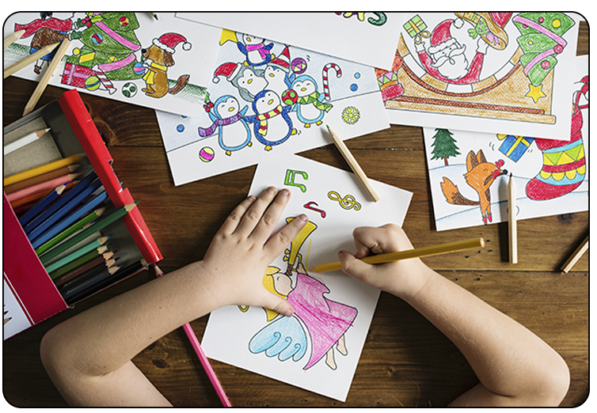

Genfind din barnlige glæde (TIPS)
Mange unge voksne har mistet deres barnlighed Her er en guide med 8 sjove tips, der kan hjælpe dig med at genfinde din barnlige glæde og give dig en pause fra hverdagen.
Gense film og serier fra din barndom
Jeg tror hurtigt du vil huske, hvorfor du elskede dem, da du var lille. Det er vigtigt at kunne koble helt fra nogengange og hvem siger de ikke kan være med din ynglings Cirkeline eller Disney film.
Drøm dig lidt væk fra virkeligheden.
Spil dine ynglings spil fra barndommen
I know, i know, Pixeline og Magnus og Myggen og nok ikke de mest spændende og medrivende spil du kan spille, men de kan være sjove at prøve igen. Måske fik du aldrig løst en gåde i et af dem som lille, men det kan du nu.
Omgiv dig med de ting du elsker
Måske havde du en yndlings actionfigur som barn eller andet legetøj, de kan stadig være en del af dit værelse. Der er faktisk mange guides der kan hjælpe dig med at re-designe dine barnlige ting til nye dekorationer.
Genfind din gamle ven
Du havde garenteret en bamse som lille som du bare ikke kunne undvære. Hvor blev de af? Er det ikke på tide at bringe dem tilbage i dit liv, jeg er sikker på de savner dig? Vidste du at det kan lette stress at kramme noget blødt og pjusket?
Hav farverigt tøj på!
Vi danskere er blevet alt for opsat på at ”sort går med alt” og ”sort slanker” det kan godt være men sort er en kedelig farve! Prøv at inkorporer flere farver i din garderobe. Det kan virke opmuntrende at kigge ned over sig selv og se en masse fine farver og mønstre.
Tegn
At tegne kan virke meget afslappende når du ikke koncentrerer dig om at de skal være det næste Picasso. Bare lav en masse krusseduller og skab sjove og søde karakterer.
Få et kæledyr
Okay, den her kræver lidt arbejde. Det er derfor det er tips. Et kæledyr kan være et familiemedlem eller din bedste ven. De kan give dig kærlighed og støtte når du mest har brug for det og andre ikke er i nærheden. Hunde f.eks. er sjove og finulige og deres humør smitter altid til man ikke kan stoppe med at smile eller grine.
Kærestebonus
Når folk er forelskede oplever de en næsten barnlig glæde og spænding ved at være sammen med den de kan lide. De kan gøre en helt forlegen og genert.
Det kan være du har en kæreste men føler i er blevet lidt fjerne. Prøv at tage ud og oplev noget sammen. Det kan være du genfinder forelskelsesfølelsen.